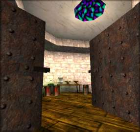
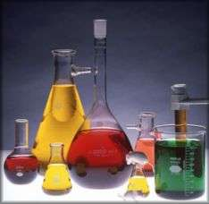

Alchemy Laboratory
`Always BOOM! tomorrow...`
- Ivanova Ducking through the low and - you happen to notice - fairly heavily reinforced doorway, you get a bit of a shock. The lab is, if anything, even more untidy than the Workshop. There is glassware everywhere, most of it of very bizarre shapes indeed. Bottles and glassy bubbles interlink with tubing and strangely spiral columns. The whole room echoes with the sound of gently boiling liquids and a steady drip, drip, dripping. Have you any idea what all this stuff is used for? If not, you have a feeling that you might find this all rather confusing...
Well, if you get bored you can always return to the Study.

| Chemistry Related:
|
|
ChemDraw, homesite. ChemDraw is a package for drawing chemical structures and equations.
| |
MDL, the makers of ISIS Draw and Base, more chem software! Both are available from this site (as is Rasmol chime).
| |
BIDS, Bath Information Delivery System - a telnet based search engine for citations. Now runs through Athens.
| |
CAS, search database for chemical structures (telnet and only a demo)
| |
Libertas, IC college libraries online - telnet.
| |
Daylight, The World Drug Index (SMILES strings)
| |
ChemFinder, from Cambridgesoft, I've always found this the best for general searches, it will give a list of web site 'hits'.
| |
Beilstein, Crossfire homesite.
| |
CCDC, Cambridge Chemical Database Centre - sub structure searches, requires 3D coordinates (crystal structure).
| |
VChemLib, and Molecule of the Month, are both databases of 3D structures (currant interest).
| |
Brookhaven, Database for proteins and macromolecules.
|
Enables a search of Imperial College Chemistry Department archives.
|
 © Michael.Wright 1999 karne@innocent.com
© Michael.Wright 1999 karne@innocent.com